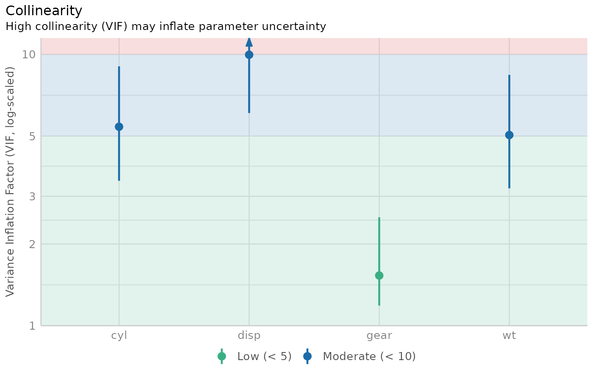

Check for multicollinearity of model terms
Source:R/check_collinearity.R, R/check_concurvity.R
check_collinearity.Rdcheck_collinearity() checks regression models for
multicollinearity by calculating the variance inflation factor (VIF).
multicollinearity() is an alias for check_collinearity().
check_concurvity() is a wrapper around mgcv::concurvity(), and can be
considered as a collinearity check for smooth terms in GAMs. Confidence
intervals for VIF and tolerance are based on Marcoulides et al.
(2019, Appendix B).
Usage
check_collinearity(x, ...)
multicollinearity(x, ...)
# Default S3 method
check_collinearity(x, ci = 0.95, verbose = TRUE, ...)
# S3 method for class 'glmmTMB'
check_collinearity(
x,
component = c("all", "conditional", "count", "zi", "zero_inflated"),
ci = 0.95,
verbose = TRUE,
...
)
check_concurvity(x, ...)Arguments
- x
A model object (that should at least respond to
vcov(), and if possible, also tomodel.matrix()- however, it also should work withoutmodel.matrix()).- ...
Currently not used.
- ci
Confidence Interval (CI) level for VIF and tolerance values.
- verbose
Toggle off warnings or messages.
- component
For models with zero-inflation component, multicollinearity can be checked for the conditional model (count component,
component = "conditional"orcomponent = "count"), zero-inflation component (component = "zero_inflated"orcomponent = "zi") or both components (component = "all"). Following model-classes are currently supported:hurdle,zeroinfl,zerocount,MixModandglmmTMB.
Value
A data frame with information about name of the model term, the
variance inflation factor and associated confidence intervals, the factor
by which the standard error is increased due to possible correlation
with other terms, and tolerance values (including confidence intervals),
where tolerance = 1/vif.
Note
The code to compute the confidence intervals for the VIF and tolerance
values was adapted from the Appendix B from the Marcoulides et al. paper.
Thus, credits go to these authors the original algorithm. There is also
a plot()-method
implemented in the see-package.
Multicollinearity
Multicollinearity should not be confused with a raw strong correlation between predictors. What matters is the association between one or more predictor variables, conditional on the other variables in the model. In a nutshell, multicollinearity means that once you know the effect of one predictor, the value of knowing the other predictor is rather low. Thus, one of the predictors doesn't help much in terms of better understanding the model or predicting the outcome. As a consequence, if multicollinearity is a problem, the model seems to suggest that the predictors in question don't seems to be reliably associated with the outcome (low estimates, high standard errors), although these predictors actually are strongly associated with the outcome, i.e. indeed might have strong effect (McElreath 2020, chapter 6.1).
Multicollinearity might arise when a third, unobserved variable has a causal effect on each of the two predictors that are associated with the outcome. In such cases, the actual relationship that matters would be the association between the unobserved variable and the outcome.
Remember: "Pairwise correlations are not the problem. It is the conditional associations - not correlations - that matter." (McElreath 2020, p. 169)
Interpretation of the Variance Inflation Factor
The variance inflation factor is a measure to analyze the magnitude of multicollinearity of model terms. A VIF less than 5 indicates a low correlation of that predictor with other predictors. A value between 5 and 10 indicates a moderate correlation, while VIF values larger than 10 are a sign for high, not tolerable correlation of model predictors (James et al. 2013). The Increased SE column in the output indicates how much larger the standard error is due to the association with other predictors conditional on the remaining variables in the model. Note that these thresholds, although commonly used, are also criticized for being too high. Zuur et al. (2010) suggest using lower values, e.g. a VIF of 3 or larger may already no longer be considered as "low".
Multicollinearity and Interaction Terms
If interaction terms are included in a model, high VIF values are expected. This portion of multicollinearity among the component terms of an interaction is also called "inessential ill-conditioning", which leads to inflated VIF values that are typically seen for models with interaction terms (Francoeur 2013).
Concurvity for Smooth Terms in Generalized Additive Models
check_concurvity() is a wrapper around mgcv::concurvity(), and can be
considered as a collinearity check for smooth terms in GAMs."Concurvity
occurs when some smooth term in a model could be approximated by one or more
of the other smooth terms in the model." (see ?mgcv::concurvity).
check_concurvity() returns a column named VIF, which is the "worst"
measure. While mgcv::concurvity() range between 0 and 1, the VIF value
is 1 / (1 - worst), to make interpretation comparable to classical VIF
values, i.e. 1 indicates no problems, while higher values indicate
increasing lack of identifiability. The VIF proportion column equals the
"estimate" column from mgcv::concurvity(), ranging from 0 (no problem) to
1 (total lack of identifiability).
References
Francoeur, R. B. (2013). Could Sequential Residual Centering Resolve Low Sensitivity in Moderated Regression? Simulations and Cancer Symptom Clusters. Open Journal of Statistics, 03(06), 24-44.
James, G., Witten, D., Hastie, T., and Tibshirani, R. (eds.). (2013). An introduction to statistical learning: with applications in R. New York: Springer.
Marcoulides, K. M., and Raykov, T. (2019). Evaluation of Variance Inflation Factors in Regression Models Using Latent Variable Modeling Methods. Educational and Psychological Measurement, 79(5), 874–882.
McElreath, R. (2020). Statistical rethinking: A Bayesian course with examples in R and Stan. 2nd edition. Chapman and Hall/CRC.
Vanhove, J. (2019). Collinearity isn't a disease that needs curing. webpage
Zuur AF, Ieno EN, Elphick CS. A protocol for data exploration to avoid common statistical problems: Data exploration. Methods in Ecology and Evolution (2010) 1:3–14.
See also
see::plot.see_check_collinearity() for options to customize the plot.
Other functions to check model assumptions and and assess model quality:
check_autocorrelation(),
check_convergence(),
check_heteroscedasticity(),
check_homogeneity(),
check_model(),
check_outliers(),
check_overdispersion(),
check_predictions(),
check_singularity(),
check_zeroinflation()
Examples
m <- lm(mpg ~ wt + cyl + gear + disp, data = mtcars)
check_collinearity(m)
#> # Check for Multicollinearity
#>
#> Low Correlation
#>
#> Term VIF VIF 95% CI Increased SE Tolerance Tolerance 95% CI
#> gear 1.53 [1.19, 2.51] 1.24 0.65 [0.40, 0.84]
#>
#> Moderate Correlation
#>
#> Term VIF VIF 95% CI Increased SE Tolerance Tolerance 95% CI
#> wt 5.05 [3.21, 8.41] 2.25 0.20 [0.12, 0.31]
#> cyl 5.41 [3.42, 9.04] 2.33 0.18 [0.11, 0.29]
#> disp 9.97 [6.08, 16.85] 3.16 0.10 [0.06, 0.16]
# plot results
x <- check_collinearity(m)
plot(x)
#> Variable `Component` is not in your data frame :/
